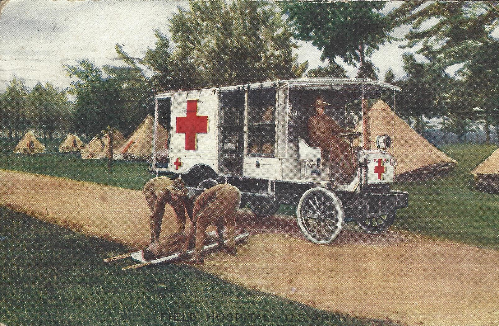
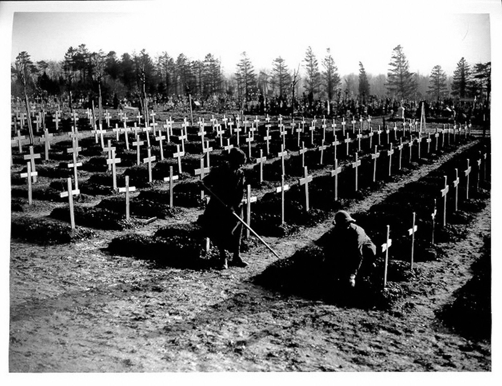
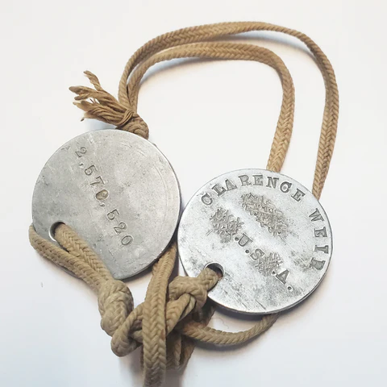
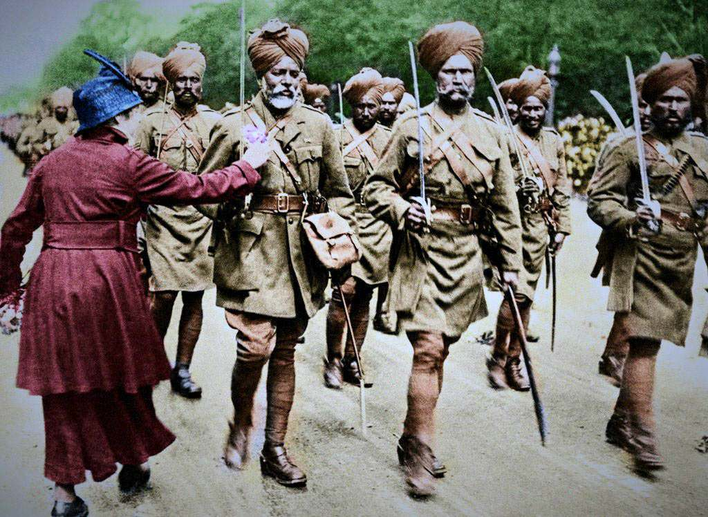
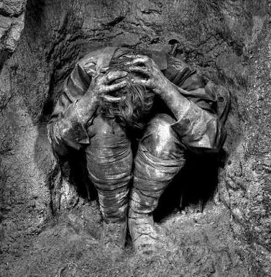
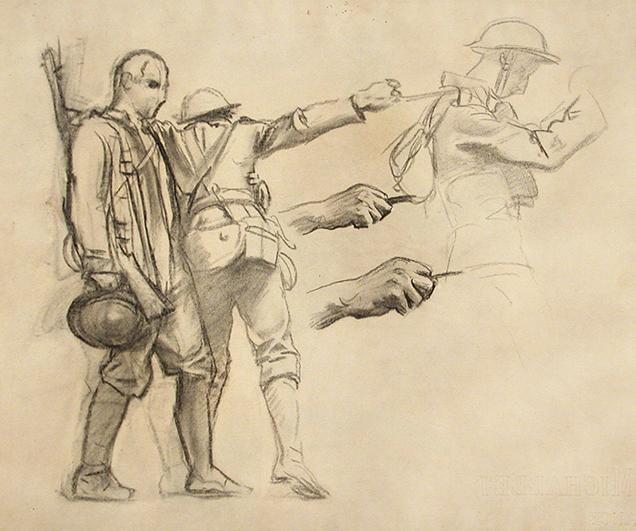
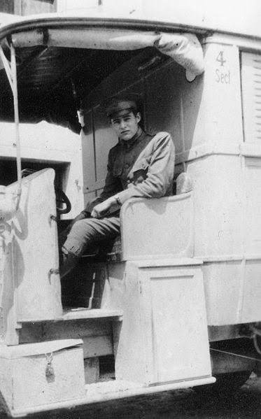
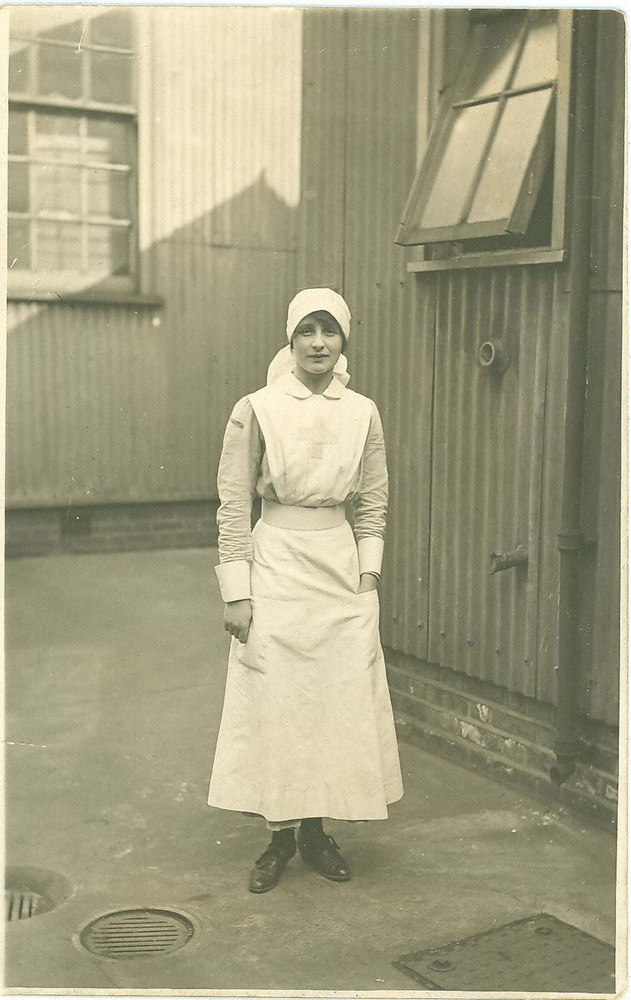
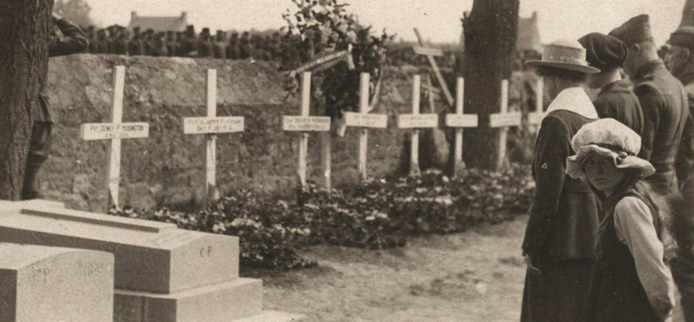
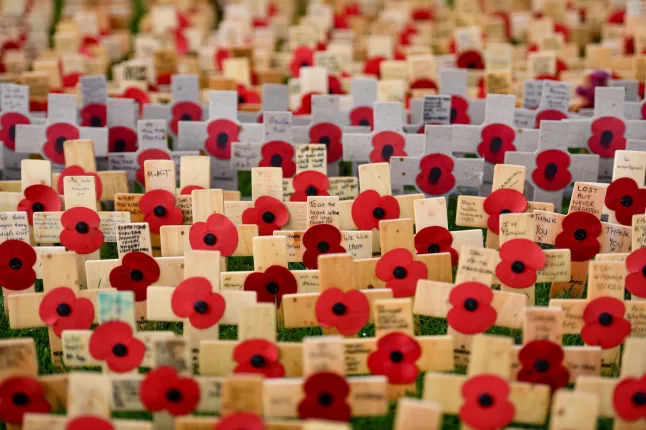

Who paid the highest price in WWI, and how did the war change culture and society?
WAR AND AFTERMATH TIMELINE
1914
WAR BEGINS
European empires enter a war many leaders expect to end quickly.
1915
NEW WEAPONS
Machine guns, artillery, trenches, and poison gas make fighting deadlier than past wars.
1916
MASS DEATH
Battles such as Verdun and the Somme show that generals can lose hundreds of thousands of men.
1918
ARMISTICE
The fighting stops on November 11, but the damage continues in families, bodies, and memory.
1919
AFTERMATH
Peace treaties, grief, memorials, and new art reveal how deeply the war changed society.
THE WARD AFTER THE BATTLE
In a military hospital, rows of wounded men lay under white sheets while nurses moved from bed to bed. Some soldiers had bandaged eyes. Some had missing limbs. Some looked awake but did not seem fully present, as if the battle had followed them into the room.
In a war hospital, wounded soldiers lay in long rows of beds. Nurses moved quietly from person to person. Some soldiers could not see. Some had lost parts of their bodies. Some were alive, but the fear of battle still seemed trapped inside them.

Wounded soldiers in a World War I hospital ward, 1910s. Source: Wikimedia Commons.
World War I was not only a military conflict. It was a human disaster that reached soldiers, civilians, families, colonies, workers, artists, and entire nations. The war killed millions, wounded millions more, and left many survivors with damage people could not always see. It also broke trust in old ideas about progress, honor, empire, and patriotic glory. To answer the essential question, we have to look past maps and victories and ask who carried the cost.
World War I was not just a war between armies. It hurt soldiers, families, workers, colonies, and whole countries. Millions died. Millions were wounded. Many people survived, but they were changed forever. To answer the question, we have to look at who paid the price.
A GENERATION DISAPPEARS
By the end of World War I, about 17 million people were dead and about 20 million were wounded. These numbers included soldiers killed in battle, people who died from wounds, and civilian casualtiesNon-soldiers who are killed, hurt, or harmed during war. caused by invasion, hunger, disease, and ruined cities. The word civilianA person who is not serving in the military. matters because many people who died were not fighting at all. They were farmers, children, factory workers, refugees, and families trapped between armies. When people later said that Europe had lost a generation, they meant that millions of young men never came home to become fathers, workers, teachers, leaders, or neighbors.
By the end of World War I, about 17 million people had died and about 20 million were wounded. Some were soldiers. Others were civilians, which means people who were not in the army. Civilians died from fighting, hunger, disease, and destroyed towns. Many young men never came home. That is why people said Europe had lost a generation.

Rows of military graves after World War I. Source: Wikimedia Commons.
The war also changed how people understood sacrifice. Before 1914, many leaders described war as a test of courage and national honor. After years of machine guns, artillery shells, gas attacks, and trench warfare, that language sounded false to many survivors. A soldier could die without ever seeing the person who killed him. A family could lose three sons in the same month and receive only official letters. The scale of death made many people question whether kings, generals, and politicians had truly understood what they were asking ordinary people to give.
Before the war, leaders often said war was brave and honorable. After years of machine guns, bombs, gas, and trenches, many people no longer believed that. A soldier might die without ever seeing the enemy. A family might lose more than one son. Many people began to question the leaders who had sent ordinary people into the war.
DID YOU KNOW

World War I identity discs, 1910s. Source: Wikimedia Commons.
Many soldiers went to war wearing a small identity disc around the neck. For families who never received a body, that little piece of metal could become the only physical proof that someone they loved had existed and died in the war.
AN EMPIRE'S SOLDIERS
World War I was called a European war, but Europe did not fight it alone. European empires used troops, workers, supplies, and money from colonies across Africa, India, Southeast Asia, the Caribbean, and the Pacific. About 600,000 Indian soldiers served overseas for the British Empire, and hundreds of thousands of African soldiers and laborers served under European command. These colonial soldiersSoldiers from lands controlled by an empire, often without equal rights. were often asked to fight for freedom while their own countries remained under foreign rule. Their service exposed one of the deepest contradictions of the war.
World War I is often called a European war, but people from many colonized places fought in it too. European empires used soldiers and workers from India, Africa, Southeast Asia, the Caribbean, and other regions. About 600,000 Indian soldiers served overseas for Britain. Many African soldiers and workers also served for European powers. They were told to fight for freedom, but their own lands were still controlled by empires.

Indian soldiers serving in France during World War I, 1910s. Source: Wikimedia Commons.
Soldiers from Senegal, Algeria, Vietnam, India, and the Caribbean experienced a war that had not been created for their freedom. Some fought in freezing European trenches after growing up in much warmer climates. Some faced racism from officers and civilians while wearing the uniform of the empire. After the armisticeAn agreement to stop fighting, usually before a final peace treaty. ended the fighting in 1918, many colonial veterans returned home expecting respect or political change. Instead, most empires kept their power and continued denying rights to the people who had served them.
Soldiers from places like Senegal, Algeria, Vietnam, India, and the Caribbean fought in a war that did not give their countries freedom. Some fought in cold trenches far from home. Some faced racism even while serving in uniform. When the armistice ended the fighting in 1918, many colonial veterans hoped things would change. Most empires still kept control and denied them equal rights.
FAST FACTS
THE HUMAN COST OF WORLD WAR I
17Mpeople were killed during the war, including soldiers and civilians across several continents
20Mpeople were wounded, leaving families and societies to live with the war long after the guns stopped
10Mcivilian deaths show that the war harmed people far beyond the battlefield
600KIndian soldiers served overseas for the British Empire, even though India remained colonized
1918the armistice stopped the fighting, but grief, injury, and anger continued afterward
THE INVISIBLE WOUNDS
Some of the worst wounds from World War I were not easy to see. Many soldiers suffered from what doctors and military officers called shell shockA wartime trauma reaction caused by extreme fear, stress, and violence.. Men shook uncontrollably, lost the ability to speak, froze in panic, or could not return to ordinary life. Today, many historians connect shell shock to PTSDA mental health injury caused by surviving terrifying or violent events., but people at the time often misunderstood it. Some military leaders treated traumatized soldiers as cowards instead of recognizing that industrial warfare had injured their minds.
Some wounds from World War I were inside the mind. At the time, people called this shell shock. Some soldiers shook, could not speak, panicked, or could not live normally after battle. Today, many people connect shell shock to PTSD. Back then, many leaders did not understand it and sometimes called suffering soldiers cowards.

A World War I soldier connected to shell shock treatment, 1910s. Source: Wikimedia Commons.
Women also carried the cost of the war in ways that changed society. During mobilizationPreparing people, industries, and resources for war., governments needed workers for factories, hospitals, farms, offices, and transportation. Women filled jobs making weapons, driving ambulances, nursing wounded soldiers, and keeping economies alive while men were away. After the war, many were told to leave those jobs and return to domestic life. The war had proven that women could do work society had once denied them, but peace did not automatically bring equality.
Women also paid a price during the war. Governments needed workers, so women worked in factories, hospitals, farms, offices, and transportation. They made weapons, drove ambulances, nursed soldiers, and kept countries running. After the war, many women were told to go home again. The war showed that women could do many jobs, but it did not give them equal rights right away.
ART SPOTLIGHT

Gassed — John Singer Sargent, 1919.
Sargent painted this large work after visiting the Western Front and seeing soldiers blinded by poison gas being led to safety.
Many people expected Sargent to create a heroic victory painting. Instead, he filled the canvas with injured men stumbling forward together, turning one of the most famous war paintings ever made into a reminder of suffering rather than glory.
WHEN FAITH IN PROGRESS COLLAPSED
World War I changed culture because many writers and artists no longer believed the old promises. Before the war, some Europeans trusted ideas like progress, empire, patriotism, and the moral guidance of kings, churches, and generals. After the war, those promises seemed broken. The Lost GenerationWriters and thinkers shaped by disillusionment after World War I. described people who felt cut off from the beliefs that had guided life before 1914. Their work often showed a world where civilization had failed to protect human beings from organized destruction.
World War I changed art and writing because many people stopped trusting old ideas. Before the war, many people believed in progress, empire, patriotism, kings, churches, and generals. After the war, those ideas felt broken. The Lost Generation was a group of writers and thinkers shaped by this disappointment. They wrote about a world that seemed damaged and untrustworthy.

Ernest Hemingway as a young Red Cross ambulance volunteer during the First World War. Source: Wikimedia Commons.
Ernest Hemingway served as a Red Cross ambulance volunteer during World War I and later transformed those experiences into A Farewell to Arms, a novel about love, injury, and survival in a world broken by war. Wilfred OwenA British soldier-poet who wrote honestly about World War I's horror. also rejected the idea that dying in battle was automatically noble or beautiful. Later art, including Pablo Picasso's Guernica, carried forward the visual language of industrial slaughter, even though it responded to a later conflict. These works were not just about battles. They showed how World War I made many people question whether modern civilization had become more advanced or simply more efficient at killing.
Ernest Hemingway worked as an ambulance volunteer during World War I and later wrote A Farewell to Arms about how war damaged love, bodies, and hope. Wilfred Owen's poems also showed that war was not noble or beautiful when it destroyed real people. Later art, including Picasso's Guernica, continued showing the horror of modern war. These works asked whether modern life had become better or just better at killing.
The war also shaped politics after 1918. Many people felt angry at leaders who had promised victory and delivered catastrophe. Defeated countries faced blame, debt, and reparationsMoney or goods a defeated country must pay after a war.. Empires weakened. New movements demanded rights, independence, and a different future. The human cost of World War I did not end when the shooting stopped; it became part of the culture, politics, and memory of the twentieth century.
The war changed politics after 1918 too. Many people were angry at leaders who had promised victory but caused disaster. Defeated countries faced blame, debt, and reparations, which means payments after a war. Empires became weaker. More people demanded rights and independence. The cost of World War I continued long after the fighting ended.
PRIMARY SOURCE MOMENT

Vera Brittain served as a volunteer nurse during World War I and later wrote about the war's cost. Source: Wikimedia Commons.
PRIMARY SOURCE
“I found myself looking at a ward full of men with smashed faces, blinded eyes, and torn limbs. Some of them were so young that they seemed hardly old enough to have left school. The war no longer looked like a map or a speech or a flag. It looked like bodies that had to be washed, bandaged, lifted, and comforted.”
Adapted from Vera Brittain's firsthand wartime nursing memories in Testament of Youth, published 1933.
Brittain's account gives a different kind of evidence than a battlefield poem. She shows the human cost from inside the hospital, where nurses saw what modern weapons did to bodies and futures after the battle had ended.
IN SIMPLE TERMS: Brittain is showing that the war's cost did not end on the battlefield. Nurses saw the damage up close every day.
THEN AND NOW
THE WAR ENDED, BUT THE WORK OF REMEMBERING DID NOT.
1920S

Crowds gather for remembrance after World War I, 1920s. Source: Wikimedia Commons.
NOW

Modern remembrance with poppies at a war memorial. Source: Wikimedia Commons or compatible free license.
THEN
After World War I, communities built memorials because so many families had no grave nearby to visit. Public ceremonies helped people name the loss and honor those who had died. These ceremonies also showed that the war had become part of national memory, not just military history.
NOW
Today, people still gather at memorials, place poppies, read names, and remember the human cost of World War I. These actions show agency because communities choose to keep memory alive. Remembering is one way people refuse to let mass death become only a number.
CONNECTION
Then and now are connected by the same problem: how can a society make sense of so much loss? World War I changed culture because it forced people to question glory, empire, progress, and leadership. Modern remembrance keeps asking what people owe to those who paid the highest price.
How should people remember a war without making war seem glorious?